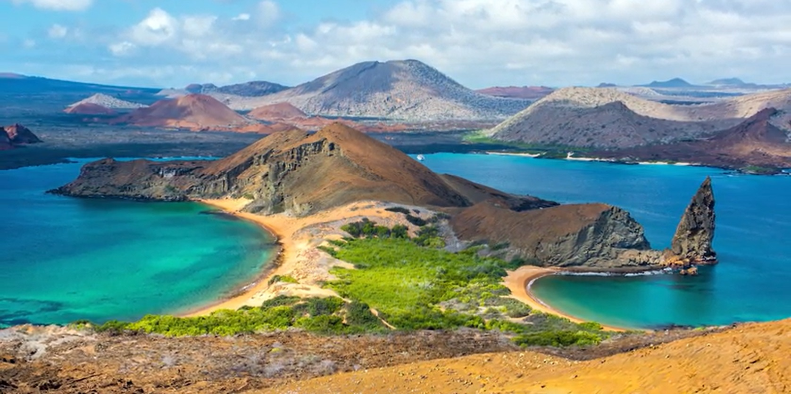

I'm really excited to talk about my upcoming expedition to the Galapagos Islands, located right on the equator in Ecuador - the middle of the world! This expedition signifies yet another major milestone in my career! My journey with this program started in the summer of 2022 when I sent a proposal to the UH Manoa Department of Earth Sciences, expressing my strong interest in the Ocean Bottom Seismograph (OBS) recovery project. Thereafter, I received confirmations from the head of the Earth Sciences at UH Manoa through formal invitation letters. Over the past two years, I have had the chance to refine my conceptual framework for this subject to enhance its educational application, especially for students in academic settings and communities in Hawaii and globally. The program will bring together principal investigators including chief scientists, geoscientists, physicists, marine scientists, graduate research scientists, OBS experts & engineers, cruise captain and crew members, and related scholars from around the world! I expect that the total number of people joining the cruise will be around 50 and \( \pm \) 5.
When I think of the Galapagos Islands, the first thing that comes to my mind is the famous scientist, Charles Darwin. I remember hearing about him when I was in high school, studying biology. He is connected to the Galapagos because he visited during his well-known journey, voyage, where he made important discoveries in the science of how species change and adapt over time, similar to how animals evolve. During this expedition, I'll be exploring some amazing scientific phenomena highlighted in my showcase: Engaging Learning Activities Physics at Earth's Midpoint Interdisciplinary Approaches Darwin Research Station Daily Journal Writing Safety & Logistics I'm committed to become a part of program called the "Apply-to-Sail" initiative, which will provide an opportunity to join in a research cruise aimed at seismically imaging the Galápagos Plume-Ridge Interaction aboard the R/V Sally Ride, the ship dedicated to diverse oceanographic research endeavors. After reviewing my appointment letter, I anticipate that we will use specialized equipment to capture images of the interaction between the hotspot and ridge in the depths of the ocean. It's an exciting opportunity for me to discover and learn. Throughout this journey, I aim to sustain high levels of engagement and enthusiasm as I tackle the specific tasks outlined in the invitation letters.
My tentative schedule involves departing from Hawaii on June 3, 2024, to embark in Golfito, Costa Rica on June 5, and disembarking in Puerto Ayora, Ecuador on July 3, 2024. Following the research expidition, we will hold for a post-cruise meeting at the Charles Darwin Research Station on the Galapagos Islands, tentatively scheduled until July 7, 2024. This exciting experience will help me learn more about physics near the equator, ocean geology, and how we use technology to map the ground under the ocean. I'll also get to work with experts in this area, which will help me learn even more and discover new things. I'm really looking forward to all the things I'll learn and how it will help me teach my students better, grow in my studies and career.
During the cruise, my responsibilities will include standing watch daily. This involves closely monitoring instrumentation, logging data and events, and providing assistance with seismometer recovery, including participating in deck operations for instrument deployments. I will adhere to the commands of the PIs and participate in all training sessions. Additionally, I will undergo training in processing and logging underway multibeam, gravity, and magnetic data, and will be expected to assist with these tasks as needed. While doing my job, I am committed to continuous learning and exploring new things about science, nature, and culture every day during the Galapagos research cruise!
Moreover, if I find myself with extra time outside of my main responsibilities, I'm planning to organize remote distance meetings with my current students and those joining the fall 2024 class. But, I'm carefully considering how to make sure effective communication and engagement in these sessions.
I've placed the following documents here for my personal organizational needs: